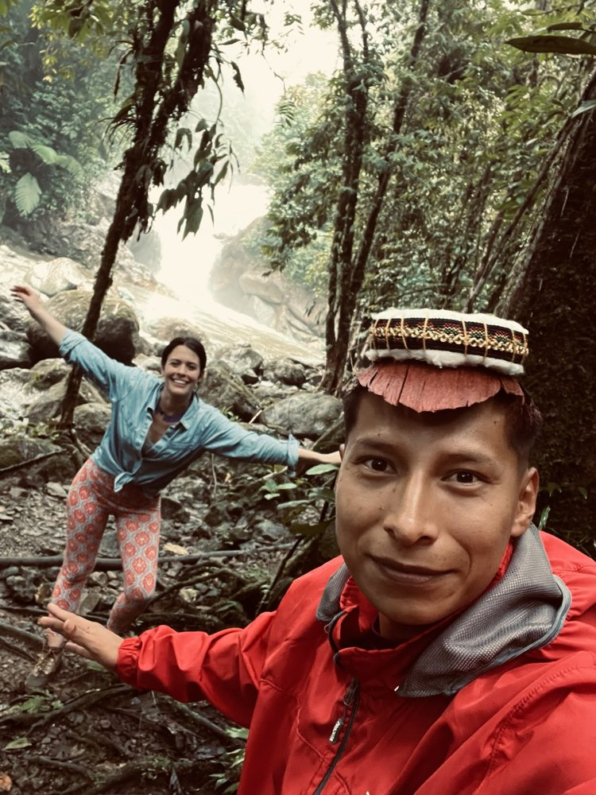
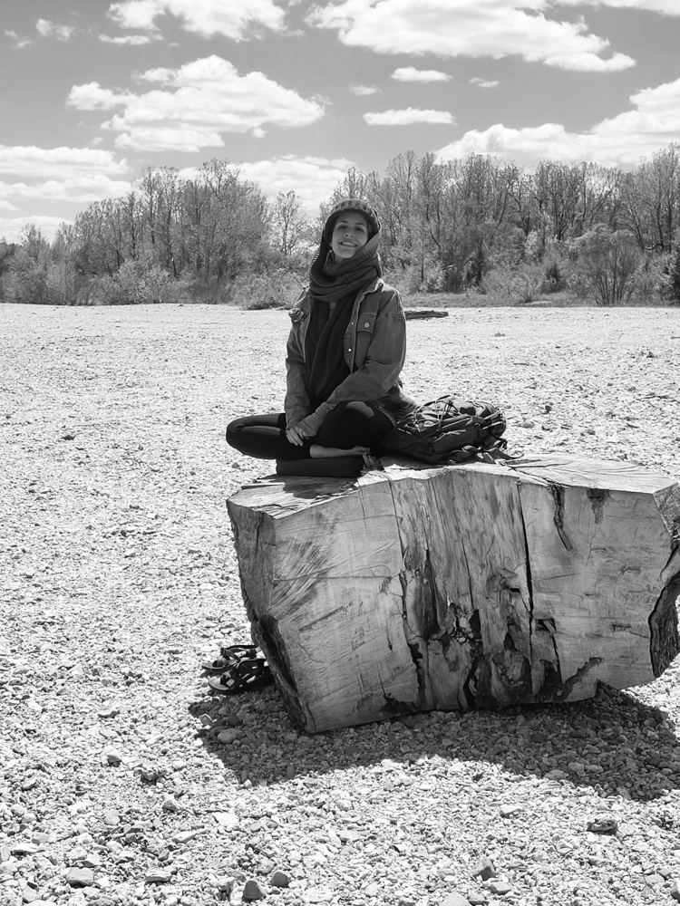
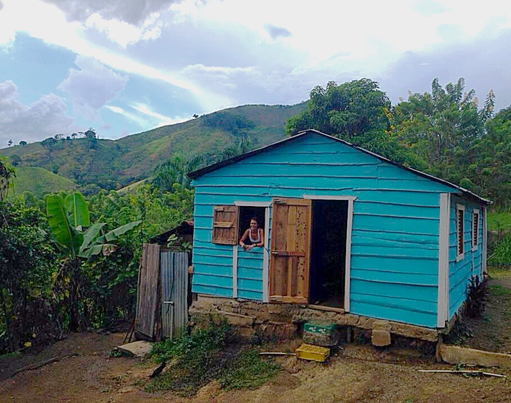
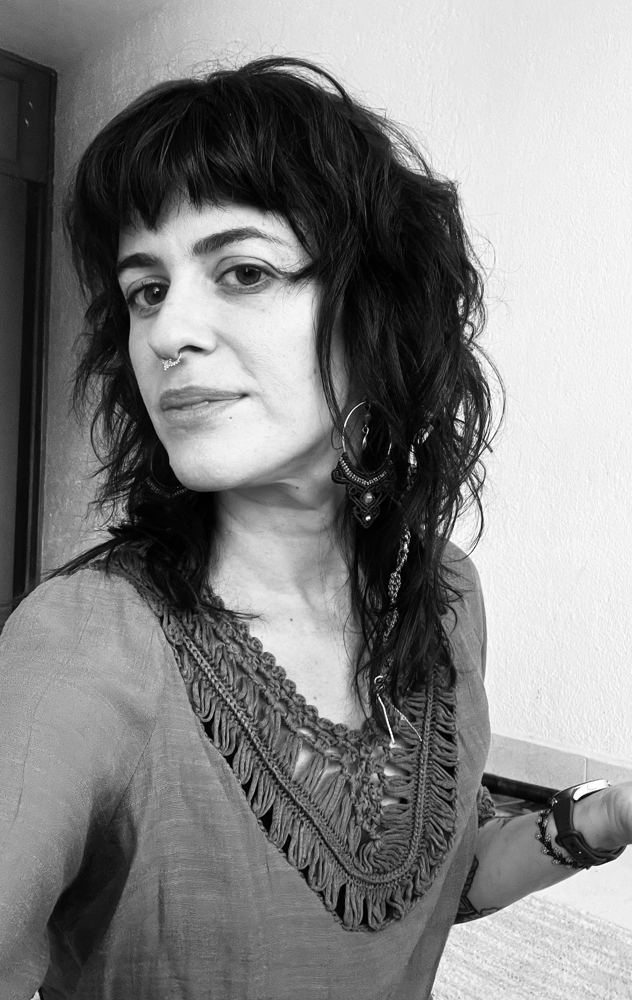
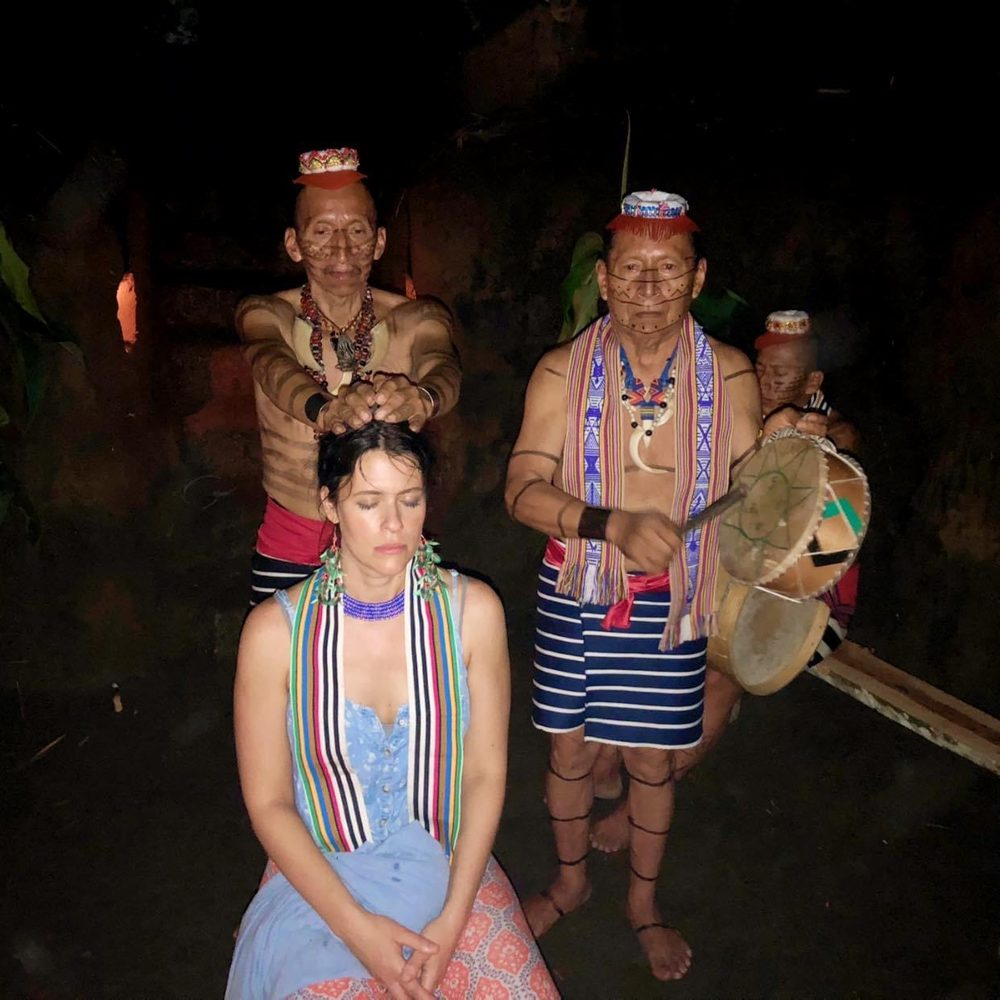
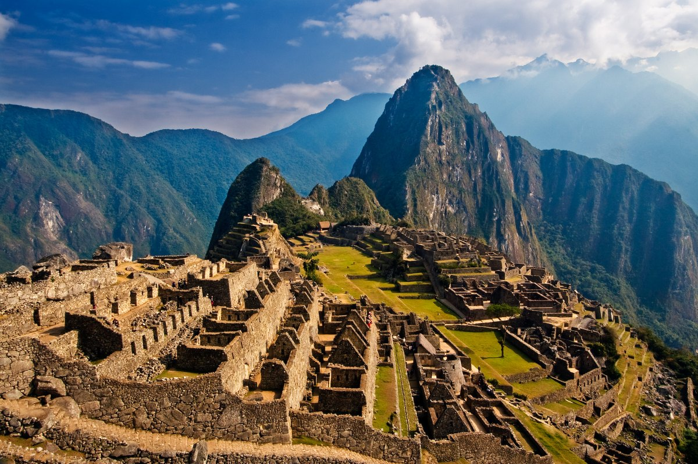
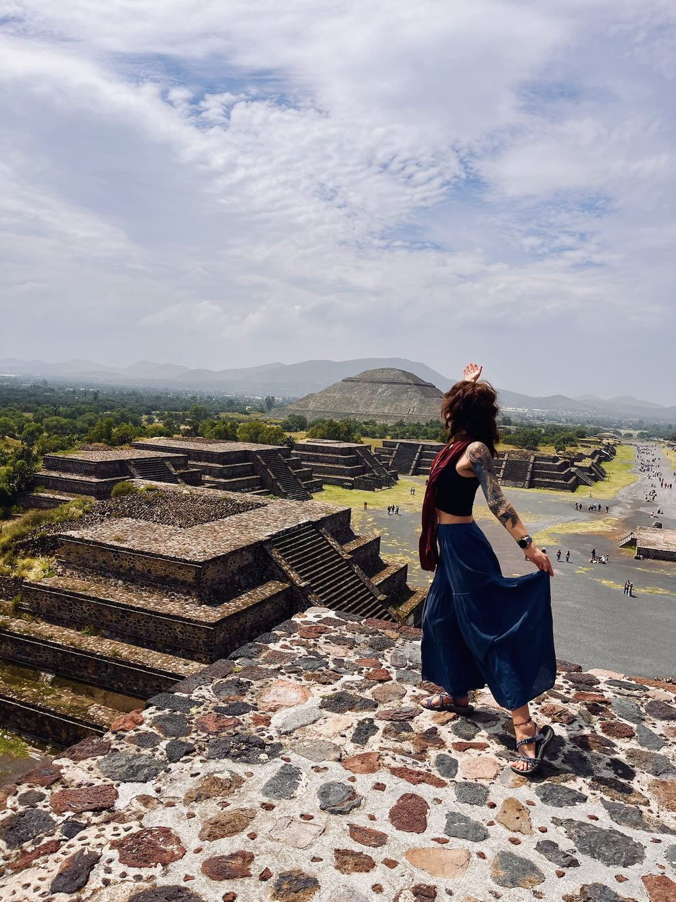
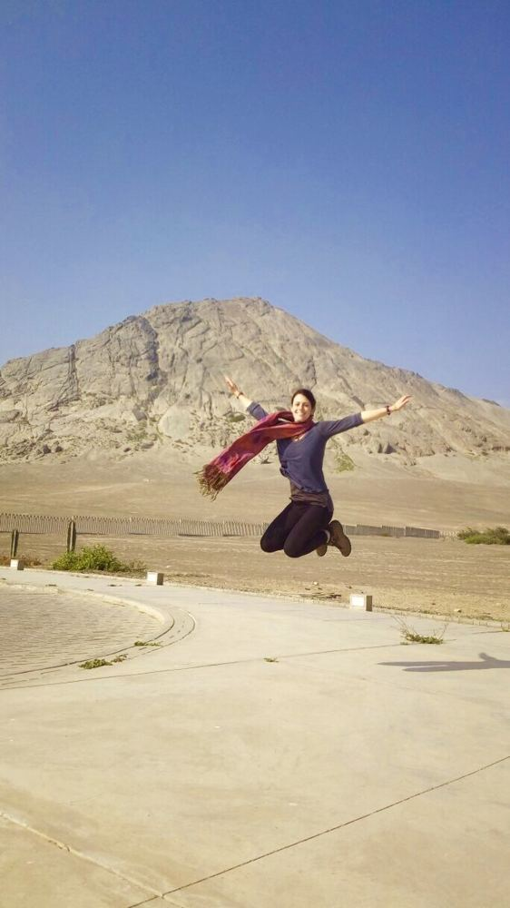

Meet Estefani
The path that brought me here

A life shaped by questions, unexpected turns, and the quiet insistence of the natural world.
A Different Kind of Freedom
I grew up in the American Midwest, in a place where I often felt constrained by the expectations around me. I sensed there was a wider world waiting beyond what I knew, though I couldn’t yet imagine what my place in it might be.
As a child, I often found refuge beneath my grandmother’s favorite tree, a weeping willow. She was the matriarch of our family, carrying the stories and strength of the women who came before her. Her tree became a sanctuary of sorts—a place where I could step away from the world without feeling entirely separate from it.
I loved the way its branches swayed in the wind, how sunlight slipped between its leaves, how something so firmly rooted could move with such grace. The willow could dance without leaving the ground. It didn’t have to choose between belonging somewhere and being moved by the world.
I couldn’t have put those feelings into words back then, but I’ve carried that image with me throughout my life. I would eventually cross borders, question the beliefs I grew up with, and search for a way of living that felt more expansive and true. In many ways, I was searching for what the willow had already shown me: that roots need not be restraints, and that we can honor where we come from while becoming more fully ourselves.
Following the Questions
My life has rarely followed a straight line. About fifteen years ago, while struggling with severe depression, I began my journey with Niños Santos, the sacred mushrooms known as psilocybin. I was looking for relief, but the experience opened a much larger inquiry into my life: the experiences that had shaped me, the beliefs I’d accepted as truth, and the possibility of seeing myself and the world through a different lens.
Meditation and time in nature became important companions along the way. My relationship with Madre Tierra, Mother Earth, deepened, and I began to experience the natural world less as something outside myself and more as a living whole of which I was a part.
I became increasingly curious about how our histories shape us, how we make meaning, and what becomes possible when we begin to look beyond the boundaries we’ve inherited.


Learning to Live Off-Script
The Dominican Republic was a turning point. I moved to an agricultural community in the mountains near the Haitian border, where I lived off-grid, without connectivity or the distractions of the outside world. Removed from the familiar structures of my life, I had to sit with parts of myself that were easier to avoid when life was full of noise and activity.
The experience challenged my emerging spirituality, too. It was one thing to feel connected to something larger than myself in moments of insight; it was another to carry that understanding into the ordinary difficulties of everyday life.
At the same time, I discovered a strength I hadn’t known I possessed. I experienced the beauty of community and confianza—a deep, lived trust that grows when people share life with one another. I began to understand that connection isn’t simply a spiritual feeling or an idea. It takes shape in the ways we care for one another, the responsibilities we share, and the lives we build together.
My time there left me wanting to understand more about the histories that shape people, the cultures that carry knowledge across generations, and the relationships between communities and the land they call home.

Learning to See the Bigger Picture
That curiosity led me to pursue a master’s degree in social policy. My studies gave me a deeper understanding of how colonialism continues to shape communities and institutions, why cultural preservation matters, and how history influences people’s opportunities and experiences.
They also led me to question my own place in the work. As a white woman working in communities I wasn’t born into, I began asking what it meant to enter spaces shaped by histories and experiences different from my own. I learned that good intentions alone aren’t enough. Working across cultures calls for listening, humility, and a willingness to keep questioning what we think we know.
Graduate school was also a period of profound personal loss. I lost three family members in a single year. Soon afterward, health concerns and surgeries altered my relationship with my body, and the years that followed brought chronic pain and neuropathy.
The questions I’d spent years exploring—about identity, meaning, and connection—became part of the everyday work of navigating grief, living with uncertainty, and finding my footing in a life I hadn’t anticipated.
These experiences didn’t give me all the answers, but they deepened my understanding of vulnerability and the quiet courage it takes to keep showing up for life, even when the path looks nothing like the one we imagined.

A Life Between Worlds
After graduate school, I built a career in public health and humanitarian work, helping expand access to resources and opportunities for communities facing geographic and structural barriers. My work often involved bringing people, organizations, and resources together across different contexts, while navigating the realities of limited funding and unequal systems.
Over time, I began to recognize a thread connecting these experiences. Again and again, I found myself working between worlds: bringing people together, navigating different perspectives, and searching for common ground.
I’ve come to think of this as being a bridge. It doesn’t mean claiming to understand experiences that aren’t my own. It means remaining curious, recognizing the limits of what I know, and taking responsibility for how I move between cultures and communities.
That responsibility continues to shape my relationships with Indigenous traditions and knowledge holders. I’m interested not only in what a practice means to me, but also in the histories, people, and responsibilities woven into it. I remain a student in that process, knowing that respect is something we practice over time.
Eventually, the direction of my professional life began to shift. Doors that had once seemed open in the United States started closing, and I found myself at another crossroads. After years of working within established systems, I had to reconsider what came next.
That uncertainty led me back to Peru.

Peru: Learning to Begin Again
Peru was a difficult and transformative chapter. It brought me face-to-face with coping patterns I’d carried for years and parts of myself I could no longer avoid. There were hard lessons, moments of feeling lost, and times when I had to pick myself up off the ground and find the strength to keep going.
It was also where my relationship with Abuelito Kambo deepened. I came to know the medicine as an ally in my ongoing exploration of pain, emotional experience, and the patterns I was trying to understand. It didn’t make the difficult parts of life disappear, but it became part of how I learned to meet them with greater awareness.
Living in Peru taught me that beginning again is rarely a clean or graceful process. Sometimes it means facing what you’ve spent years trying to outrun. Sometimes it means releasing the life you thought you were supposed to have and making room for something you couldn’t yet see.
Eventually, I found myself ready to move forward. My path led me to Mexico, where I stepped into the warmth of the sun and began imagining a different kind of life. I didn’t arrive with everything resolved. I arrived carrying the lessons of Peru, a deeper respect for the long process of becoming, and a willingness to see what might take root.

Light Through the Leaves
Coming to Oaxaca, Mexico, felt like a meaningful next chapter. This is a place deeply connected to the ancestral traditions of Niños Santos that helped shape my life. I think of María Sabina, the Mazatec healer whose knowledge brought these traditions to wider attention, often at great personal cost. Her story reminds me that behind the medicines are generations of Indigenous knowledge, the people who have protected it, and the sacrifices that have too often gone unrecognized.
I came here not only to continue learning, but to find ways to give back to the land and community I now call home. I want the knowledge and experience I’ve gathered throughout my life to become an offering—not simply something that has shaped me, but something I can put to use in service of others.
Light Through the Leaves brings together the different threads of my life: my background in public health, my experience working across cultures, my connection with the natural world, and the ancestral medicines that have accompanied me along the way.
Ancestral practices and medicines are at the heart of my work, alongside somatic support informed by my background in public health. I hope to create spaces where people can reconnect with themselves, explore their experiences, and feel supported as they find their own way forward.
I’m still learning what it means to belong somewhere, to build community, and to live in reciprocity with the place that holds me. For me, giving back isn’t something I can claim simply because I’ve arrived. It’s a commitment I hope to honor through the relationships I build, the knowledge I share, and the ways I contribute to the community I’m becoming part of.
Light Through the Leaves is one expression of that ongoing journey—a place where the many paths I’ve walked can meet in service to something beyond myself.

A Continuing Journey
I still think about my grandmother’s willow. As a child, I was drawn to the way it moved without losing its roots. I understand that image differently now. Life has carried me across borders, through grief and unexpected turns, and into ways of living I could never have imagined.
I often return to the words, “Para llegar a Dios, hay que aprender a ser humano.” To reach God, we must learn to be human.
I’m still becoming. Still asking questions. Still learning how to stay rooted while allowing life to transform me.
Perhaps that is what I was looking for beneath the willow all those years ago: not an escape from the world, but a way to be in it more fully. To honor my roots while reaching toward the unknown, and to meet the complexity of being human without losing my capacity for wonder.
That is the spirit I hope to carry into my life in Oaxaca, the relationships I build, and my offerings. I know that each of us is walking a path of our own, carrying stories, searching for meaning, and finding our way through the light and shadows of being human. If my journey has taught me anything, it is that we don’t have to have everything figured out to begin again, to reconnect with ourselves, or to find beauty in the unfolding.
Perhaps we are all learning to see the light a little differently—to recognize it in the world around us, in one another, and in ourselves.

You are the light through the leaves. We all are.
With care, Estefani